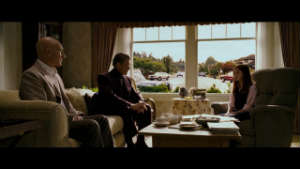

Saturday
As i'm walking to go on the tower of terror at disney land, I start to notice that soemone is following me. Ever since I have gotten this telekinetic power i've been super suspicious about everyone. But i'm sure someone is following me. When I fianlly see who it is I stop in my tracks. Professor Xavier is staring right at me. As I am walking over to him he tells me that I need to go to his institute in order to learn how to control my powers.

Sunday
After telling Professer X that I couldn't talk right now he told me that coming to the school was for my own good. And if I did I would become an X-men one day. When he had ssaid that I knew I had to go. It had always been a dream of mine to meet the team and one day work with them. And here is the professor practically handing me a spot on the team.
Monday
After I had told the professor I would go he said He msut leave now but they will send the blackbird to come get me on tuesday. So today I packed everything I needed which all fit in one suitcase and then went to all my favorite places in fresno before I leave.
Tuesday
When I was on the blackbird there were other students there also going to the school. All of there powers were really cool to. One guy could teleport to anywhere he has been. Another guy wore these special glasses so he wouldn't kill anybody with hsi laser eyes. There names were Kurt and Scott and were pretty nice. Although Kurt seemed a little depressed.
Wednesday
When we had gotten there Beast had told us that they were currently on spring break so our classes weren't to start until Monday. He said we are free to do whatever we want but we can't go off of the school grounds. Which was kind of depressing because Kurt had been to Hawaii once and that sounded really cool.
Thursday
I had made more friends and they were all mad that they couldn't go anywhere either. So, we all decided that we should go because most of the teachers were on a mission so knowbody would even notice. And we all got ready to travel the world for the next 3 days.
Friday
It turns out Kurt had been all over the world becasue he used to be in some kind of twisted circus. So the first place we went was Paris. And money wasn't a problem because this girl named Jean would convince people to give us things for free. Our next stop was Italy and the pizza there was absolutly amazing.
Saturday
We had stayed at the Ritz in Rome because I had gotten a very rich lady to offer to pay for us. Then after we went to Hawaii. And it was amazing. Because we weren't the onyl ones on spring break it was a little crowded but it was still fun and we learned how to surf.
Sunday
After about half the day in Rome we decide it's getting late so we go back to the school. And when we get there Beast and the Professor and looking very upset in front of our rooms. They explain how that was very dangerous and we could have gotten hurt. Then told us because of this incident we are not allowed off the grounds for thanksgiving break. So we all go back to our rooms waiting for school to start the next day.